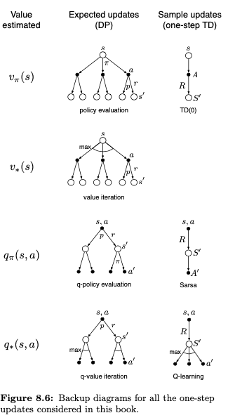
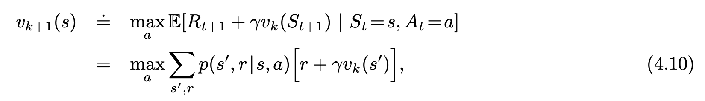

- 8.4. Prioritized Sweeping
- 8.5 Expected vs. Sample Updates
- 8.6 Trajectory Sampling
- 8.7 Real-time Dynamic Programming
- 8.8 Planning at Decision Times
- 8.9 Heuristic Search
8.4. Prioritized Sweeping
In general, we want to work back not just from goal states but from any state whose value has changed.
In this way one can work backward from arbitrary states that have changed in value, either performing useful updates or terminating the propagation. This general idea might be termed backward focusing of
planning computations.
for this algorithm, it add a process:
$P \leftarrow |R+\gamma*max_aQ(S’,a)-Q(S,A)|$
$if P > \theta$ then insert s,a into PQueue
planning the state in the PQueue and we will update all the S,A lead to the element in the PQueue
It is natural then to update each pair not with a sample update, as we have been using so far
One of prioritized sweeping’s limitations is that it uses expected updates in my view, we call it update expected because we update all the s,a that can leads to current state in the PQueue.
By selecting the order in which small updates are done it is possible to greatly improve planning effciency beyond that possible with prioritized sweeping.
8.5 Expected vs. Sample Updates
- state/state-action
- optimal next polciy/arbitary policy
- sample/expected
These three binary dimensions give rise
to eight cases, seven of which corre-
spond to specific algorithms, as shown
in the figure to the right.

prioritized sweep-ing is always done using one of the expected updates.
expected updates certainly yield a better estimate because they are uncorrupted by sampling error
If there is enough time to complete an expected update, then the resulting estimate is generally better than that of b sample updates because of the absence of sampling error.
can we combine expected with sample update (part probability and do one step TD?)
By causing estimates to be more accurate sooner, sample updates will have a second advantage in that the values backed up from the successor states will be more accurate. Expected need all successor to be more accurate. But sample is converging during a process.
Trajectory Sampling
Exhaustive sweeps implicitly devote equal time to all parts of the state space rather than focusing where it is needed.
to assure convergence, all states or state–action pairs must be visited in the limit an infinite number of times
If we do not sample uniformly, hore appealing is to distribute updates according to the on-policy distribution, that is, according to the distribution observed when following the current policy.
one simulates explicit individual trajectories and performs updates at the state or state–action pairs encountered along the way. We call this way of generating experience and updates trajectory sampling.
Is the on-policy distribution of updates a good one? Intuitively it seems like a good choice, at least better than the uniform distribution. For example, if you are learning to play chess, you study positions that might arise in real games, not random positions of chess pieces.
Whether or not function approximation is used, one might expect on-policy focusing to significantly improve the speed of planning.
Will on-policy update suffer the eplore/epolit problem? like dyna Q+ we give some state we do not reach in long time to do more exploration. If we use on policy, we may acess the same sates in the long time. ans: yes, in the following part, there are experiment to compare sample and on-policy. It’s clear to see the on-policy cannot converge to the optimal solution in the long run.
but they do suggest that sampling according to the on-policy distribution can be a great advantage for large problems, in particular for problems in which a small subset of the state–action space is visited under the on-policy distribution.
8.7 Real-time Dynamic Programming
RTDP updates the values of states visited in actual or simulated trajectories by means of expected tabular value-iteration updates

We can see the update methods. the RTDP use the mean of each options.
RTDP use a greedy algorithm thus it must have a exploring start.
8.8 Planning at Decision Time
before an action is selected for any current state $S_t$, planning has played a part in improving the table entries, or the function approximation parameters, needed to select actions for many states, including $S_t$. Used this way, planning is not focused on the current state. We call planning used in this way background planning. I think background planning means we select several state anction pairs to do the update for the value functions like the way we do above
More generally, planning used in this way can look much deeper than one-step-ahead and evaluate action choices leading to many different predicted state and reward trajectories. Unlike the first use of planning, here planning focuses on a particular state. We call this decision-time planning. we use planning to predict next state and so on to make the best next choice.
These two ways of thinking about planning—using simulated experience to gradually improve a policy or value function, or using simulated experience to select an action for the current state
8.9 Heuristic Search
In conventional heuristic search no e↵ort is made to save the backed-up values by changing the approximate value function. In fact, the value function is generally designed by people and never changed as a result of search.
No matter how you select actions, it is these states and actions that are of highest priority for updates and where you most urgently want your approximate value function to be accurate. => heuristic search shall focus on these states and actions.
The distribution of updates can be altered in similar ways to focus on the current state and its likely successors.
8.10 Rollout Algorithms
Rollout algorithms are decision-time planning algorithms based on Monte Carlo control applied to simulated trajectories that all begin at the current environment state.
Then the policy that selects an action in s that maximizes these estimates and thereafter follows $\pi$ is a good candidate for a policy that improves over $\pi$
Intuition suggests that the better the rollout policy and the more accurate the value estimates, the better the policy produced by a rollout algorithm is likely be (but see Gelly and Silver, 2007).
We do not ordinarily think of rollout algorithms as learning algorithms because they do not maintain long-term memories of values or policies.
8.11 Monte Carlo Tree Search
but it is not limited to games; it can be e↵ective for single-agent sequential decision problems if there is an environment model simple enough for fast multistep simulation.
MCTS extends the initial portions of trajectories that have received high evaluations from earlier simulations.
For the most part, the actions in the simulated trajectories are generated using a simple policy, usually called a rollout policy as it is for simpler rollout algorithms.
From the selected node, or from one of its newly-added child nodes (if any), simulation of a complete episode is run with actions selected by the rollout policy. The result is a Monte Carlo trial with actions selected first by the tree policy and beyond the tree by the rollout policy. I think this rollout will do not evaluate the actions and choose actions by rollout policy to generate trajectories and use this rewards gathered by tree policy (need to evaluate multipy nodes and actions) to represent the rewards of actions that are generated by tree policy.
MCTS effectively grows a lookup table to store a partial action-value function, with memory allocated to the estimated values of state–action pairs visited in the initial segments of high-yielding sample trajectories. MCTS thus avoids the problem of globally approximating an action-value function while it retains the benefit of using past experience to guide exploration.
Summary
All of the methods we have explored so far in this book have three key ideas in common: first, they all seek to estimate value functions; second, they all operate by backing up values along actual or possible state trajectories; and third, they all follow the general strategy of generalized policy iteration (GPI), meaning that they maintain an approximate value function and an approximate policy, and they continually try to improve each on the basis of the other.
There are also methods that are intermediate along the horizontal dimension. These include methods that mix expected and sample updates, as well as the possibility of methods that mix samples and distributions within a single update.
all the dimension to represent a method
- time step
- distribution
- on vs off polciy
- Definition of return
- Action values vs. state values vs. afterstate values
- Action selection/exploration
- Synchronous vs. asynchronous
- Real vs. simulated
- Location of updates What states or state–action pairs should be updated? Model- free methods can choose only among the states and state–action pairs actually encountered, but model-based methods can choose arbitrarily. There are many possibilities here.
- Timing of updates Should updates be done as part of selecting actions, or only after- ward?
- Memory for updates How long should updated values be retained? Should they be retained permanently, or only while computing an action selection, as in heuristic search?